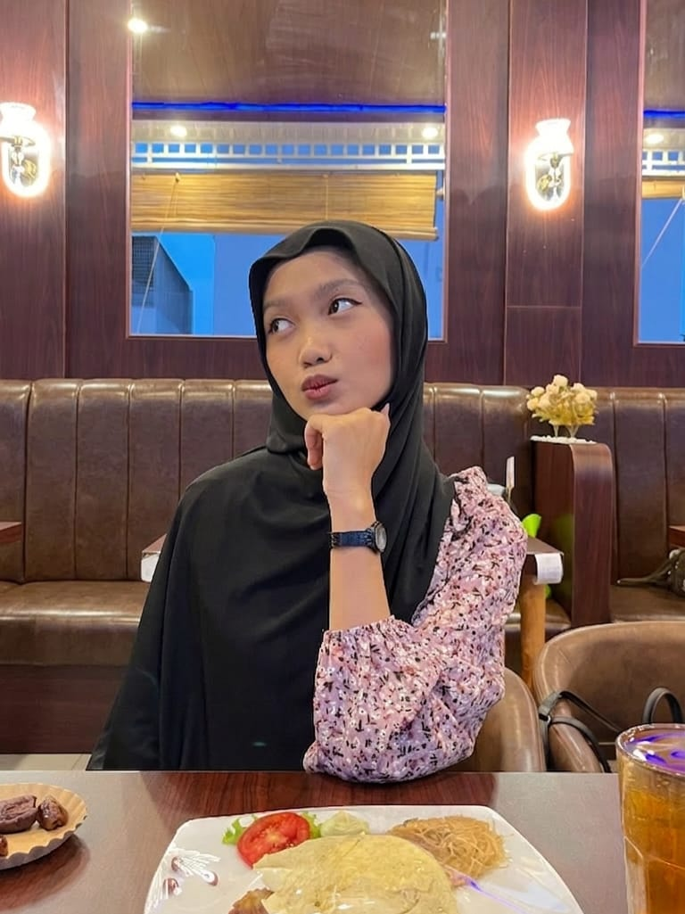

<!DOCTYPE html>
<html lang="id"></html>
<head>
    <meta charset="UTF-8">
    <title>biodata Oktisa Ayumi Rahmadani</title>
</head>
<body>
    <h1 align="center">Hi semua, Saya Oktisa Ayumi Rahmadani</h1>
    <p align="center">
        <abbr title="Nomor Induk Mahasiswa">NIM</abbr>: <strong>7243250013</strong> &nbsp;|&nbsp;
        <abbr title="Program Studi"></abbr> : <strong>Bisnis Digital</strong>
    </p>
    <hr>

    <h2>Data Diri</h2>
    <table border="1">
        <tr>
            <td>Nama Lengkap</td>
            <td><strong>Oktisa Ayumi Rahmadani</strong></td>
        </tr>
        <tr>
            <td><abbr title="Nomor Induk Mahasiswa">NIM</abbr></td>
            <td>7243250013</td>
        </tr>
        <tr>
            <td>Program Studi</td>
            <td><abbr title="Bisnis Digital - Kombinasi antara ilmu bisnis dan teknologi digital">BD</abbr> - Bisnis Digital</td>
        </tr>
        <tr>
            <td>Fakultas</td>
            <td><abbr title="Fakultas Ekonomi">FE</abbr></td>
        </tr>
        <tr>
            <td>Angkatan</td>
            <td>2024</td>
        </tr>
    </table>
    <hr>

    <h2>Foto</h2>
    
    <hr>

    <h2>Alasan Memilih Bisnis Digital</h2>

    <blockquote>
        "Masa depan dunia usaha akan bertransformsi ke ranah digital dan saya ingin menjadi bagian dari perubahan itu"
    </blockquote>

    <p>
        Saya memilih jurusan <mark><strong>Bisnis Digital</strong></mark> karena saya percaya bahwa masa depan dunia usaha akan bergantung pada teknologi.
        Dulu sebenarnya saat memilih prodi di SNBT saya disarankan oleh Ayah saya untuk mengambil bisdig karena prospek nya cukup luas, ditambah
        saat itu saya juga sudah hopeless, akhirnya saya pertimbangkan lah prodi ini. Saya sempat ingin memilih prodi Pendidikan Bahasa Ingris
        karena saya suka bahasa inggris. Akhirnya setelah pertimbangan dan research saya memilih <del>Pendidikan Bahasa inggris</del> dan memilih
        <ins>Bisnis Digital</ins> sebagai pilihan utama.
        <br><br>
        Saya ingin berkontribusi dalam perkembangan <em>ekonomi digital indonesia</em> yang terus berkembang pesat. 
    </p>

    <p>Berikut pertimbangan saya memilih prodi ini</p>
    <ul>
        <li>Dunia bisnis semangkin bergantung pad teknologi dan platform digital</li>
        <li>Menggabungkan dua bidang yang saya minati: <strong>Kewirausahaan</strong> dan <strong>teknologi</strong></li>
        <li>Potensi karir yng luas seperti <em>e-commerce</em> , <em>digital marketing</em> , hingga <em>start-up</em></li>
        <li>Ingin membangun bisnis sendiri di masa depan</li>
    </ul>
    <hr>

    <h2>Hobi Saya</h2>
    <ol>
        <li>Bernyanyi</li>
        <li>Membaca Buku</li>
        <li>Mengikuti Tren Media Sosial</li>
        <li>Tidur</li>
        <li>Belajar Desain</li>
        <li>Mencoba sesuatu yang baru tapi ga nyusahin</li>
    </ol>
    <hr>

    <div>
        <h2>Keahlian Saya</h2>
        <p>Beberapa skill yang sedang saya kembangkan:<sup>*</sup></p>
        <ul>
            <li><span style="color:blue;">Digital Marketing</span></li>
            <li><span style="color:blue;">Social Media Management</span></li>
            <li><span style="color:blue;">Content Writing</span></li>
            <li><span style="color:blue">Canva Design</span></li>
        </ul>
        <p><sub>*terus diperbarui seiring dengan perkembangan pembelajaran</sub></p>
    </div>
    <hr>

    <p align="center"><i>&copy; 2024 - Oktisa Ayumi Rahmadani - NIM 7243250013</i></p>
</body>
</html>
